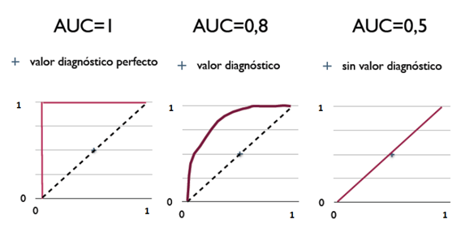

Investigación Cualitativa

Máster Universitario en Neurociencias Básicas, Aplicadas y Dolor
Introducción a la Metodología Científica
Nota
Material docente de Miguel Angel Luque-Fernández (Dpto. Estadística e I.O., UGR · mluquefe@ugr.es · migariane.github.io · maluque.netlify.app). La estructura y el enfoque didáctico del curso toman como referencia la asignatura de Metodología Científica del Máster en Neurociencias Básicas, Aplicadas y Dolor (UGR), impartida originalmente por J. L. Romero-Béjar (2022).
Granada, 2026-10-10
Índice
- 1 Fundamentos de la investigación cualitativa
- Preliminares
- Fases de la investigación cualitativa
- Métodos de investigación cualitativa
- Técnicas de investigación cualitativa
- Almacenamiento, análisis e interpretación de los datos
- 2 Validez de los métodos diagnósticos
- Pruebas diagnósticas
- Validez y fiabilidad de una prueba diagnóstica
- Sensibilidad y especificidad
- Curvas ROC
- Índices de seguridad: VPP y VPN
- 3 Fundamentos de la práctica basada en la evidencia
- Orígenes y definición
- Práctica basada en la evidencia
- 4 Bases de datos bibliográficas
- Fuentes documentales de evidencia
- Revisión bibliográfica
- Instrumentos de la evidencia científica
- Elaboración de informes
- Integración de resultados a la práctica clínica
- 5 Supuesto práctico
Paradigma
Un paradigma es una visión del mundo, una forma de segmentar la complejidad del mundo.
Se puede concebir como un cuerpo ideológico, filosófico y científico que se considera válido en una época o en un tiempo determinado según la comunidad científica.
En la elaboración de un paradigma, se responden interrogantes filosóficos del tipo siguiente:
- Ontológico (naturaleza de la realidad).
- Epistemológico (relación entre el investigador y lo investigado).
- Axiológico (utilidad de los valores).
- Metodológico (forma de obtener el conocimiento).
Técnicas de investigación en Ciencias Sociales
Metodologías (enfoques):
1) Empírico-analítica (cuantitativa)
- Experimental
- Cuasi experimental
- Ex post facto
2) Constructivista (cualitativa)
- Fenomenológica: estudia la experiencia vivida tal y como es percibida por los sujetos.
- Interaccionismo simbólico: analiza cómo las personas construyen significado a través de la interacción social.
- Etnografía: describe y comprende prácticas culturales mediante observación prolongada en contextos naturales.
- Teoría fundamentada: genera teoría a partir de los datos mediante comparación constante (codificación progresiva).
- Etnometodología: estudia los métodos cotidianos con los que las personas producen el orden social.
- Fenomenografía: examina las distintas formas en que los sujetos experimentan/perciben un fenómeno.
3) Sociocrítica (cualitativa)
- Investigación-acción: combina investigación y práctica para mejorar una realidad, mediante ciclos de diagnóstico, planificación, acción y evaluación con participación de los implicados.
- Participativa
- Colaborativa
- Feminista
Investigación cuantitativa vs. investigación cualitativa
La investigación cuantitativa describe, verifica relaciones entre variables y examina los cambios observados en la variable respuesta en función de la/s variable/s independiente/s. Su principal característica es la objetividad. La epidemiología aplica las premisas de la investigación cuantitativa.
La investigación cualitativa, sin embargo, tiene por finalidad comprender un fenómeno desde el punto de vista de los sujetos: las observaciones se describen principalmente de manera narrativa. Está orientada al estudio de la realidad social, siempre compleja. Puede cometer el error de la subjetividad del investigador que analiza el discurso.
Características de la investigación cuantitativa y cualitativa
Investigación cuantitativa
| Característica | Descripción |
|---|---|
| Objeto de estudio | Cantidad (causalidad) |
| Origen filosófico | Positivismo |
| Conceptos asociados | Experimento |
| Finalidad de la investigación | Descripción, contraste de hipótesis, predicción, control |
| Diseño | Predeterminado. Lineal |
| Contexto | Artificial. Laboratorio |
| Muestra | Aleatoria y representativa |
| Obtención de datos | Estructurada y sistémica |
| Análisis de datos | Deductivo |
| Resultados | Precisos. Limitados |
Investigación cualitativa
| Característica | Descripción |
|---|---|
| Objeto de estudio | Cualidad (naturaleza, esencia) |
| Origen filosófico | Fenomenología |
| Conceptos asociados | Trabajo de campo. Etnografía |
| Finalidad de la investigación | Descripción, comprensión, generación de hipótesis |
| Diseño | Flexible. Circular |
| Contexto | Natural |
| Muestra | No aleatoria |
| Obtención de datos | Textos, entrevistas, observaciones, etc. |
| Análisis de datos | Inductivo |
| Resultados | Holísticos. Expansivos |
Proceso y fases de la investigación cualitativa
- Preparatoria o reflexiva.
- Revisión de la literatura.
- Revisión y análisis de la documentación.
- Mapeo.
- Muestreo.
- Recogida de datos.
- Definición de las técnicas e instrumentos.
Fase 1: preparatoria o reflexiva
Esta fase es el punto de partida en el que el investigador ha de identificar el problema de estudio. Entre otras tareas debe:
- Analizar la realidad social o cultural.
- No se trata de estudiar una enfermedad sino los casos particulares de las personas. Entender el mundo de estas personas.
- Esta forma de estudio sitúa al investigador ante la decisión del paradigma cuantitativo o cualitativo.
- Ha de definir la pregunta de investigación. En el caso cualitativo esta pregunta se inclinaría hacia lo subjetivo, lo social, etc.
- Según lo anterior es necesario el contacto directo con las personas. La entrevista, el diálogo, etc. ayudarán a definir y precisar el problema de investigación.
Fase 2: revisión de la literatura
Esta fase es en la que se realiza una búsqueda bibliográfica del tema objeto de estudio.
- Esta fase es paralela a la recolección de datos y a los análisis preliminares.
- La revisión bibliográfica es un referente teórico acerca del problema de estudio.
- Ayuda a depurar las categorías de información que se van determinando en el transcurso de la investigación.
Fase 3: revisión y análisis de la documentación
En esta fase se recurre a informantes clave para familiarizarse con la realidad. Se interactúa de manera eficaz tanto con las personas como con las situaciones objeto de la investigación.
Los documentos pueden ser de naturaleza muy diversa: personales, institucionales o grupales, formales o informales.
El análisis documental se realiza en cinco etapas:
- Rastreo e inventario de los documentos disponibles.
- Clasificación de los documentos identificados.
- Selección de los documentos relevantes para nuestra investigación.
- Lectura en profundidad de los documentos.
- Lectura cruzada y comparativa de los documentos en base a los hallazgos previos.
Fase 4: mapeo
El mapeo complementa a la fase anterior. Ayuda a situarnos en el contexto donde se llevará a cabo la investigación, ya que nos permitirá conocer la realidad socio cultural, a los participantes, sus circunstancias, etc.
Fase 5: muestreo
Esta fase es la de la selección de actores, eventos, lugares que se incluirán en la investigación.
- Debe ser pertinente: identificar a aquellos participantes que aporten mayor y mejor información.
- Debe ser adecuado: contar con suficientes datos para desarrollar una completa y rica descripción del fenómeno bajo análisis.
Cuando se trate de lugares, eventos, situaciones para la observación, además de los anteriores, debe de ser:
- Conveniente: supone la elección del mejor lugar para la labor sin crear interferencias.
- Oportuno: se debe estar en el momento justo y adecuado.
- Disponible: el acceso a los lugares debe ser libre y permanente.
Fase 6: recogida de datos
En esta fase se especifica el tipo de datos a recoger, el lugar y la forma, etc.
Puede responder a las siguientes cuestiones:
- ¿Debe primar la calidad de los datos frente a la cantidad?
- ¿Por dónde comenzar y por dónde terminar?
- ¿A quién incluir y excluir del proceso de recolección de la información?
Fase 7: definición de las técnicas e instrumentos
Esta fase se definen las técnicas e instrumentos para la recogida de datos.
Han de tenerse en cuenta los siguientes elementos:
- Enfoque desde el que se plantea la investigación.
- El tipo de información que se pretende conseguir.
- Las fuentes de información y sus características.
- El tiempo del que se dispone para todo el proceso.
Principales diseños y métodos de investigación cualitativa
Los métodos son los caminos específicos que permiten acceder al análisis de los distintos objetivos que se pretenden investigar y abarcan todos los procedimientos y actividades necesarios para adquirir un determinado conocimiento.
- Métodos etnográficos o naturalistas.
- Método de la teoría fundamentada.
- Método del análisis del discurso.
- Método de la investigación-acción participante.
Métodos etnográficos o naturalistas
El investigador participa en la vida cotidiana de los investigados.
- Nace de la antropología natural y muchos la consideran como la forma básica de investigación cualitativa.
- El investigador observa, escucha, habla con los participantes y recopila la información.
- Las técnicas más utilizadas son la observación participante, la entrevista y las técnicas documentales.
Método de la teoría fundamentada
Elaboran una teoría del fenómeno estudiado de forma inductiva.
- Se elabora durante la recogida y análisis de los datos. Se interpretan y codifican.
- Asume que el investigador se introduce en el campo de acción para conocer cómo se desarrollan las cosas.
Método del análisis del discurso
Analizan el lenguaje de la comunicación entre los actores situados en un contexto social determinado.
- El discurso se considera como un conjunto de prácticas lingüísticas que mantiene y promueve las relaciones personales.
- El análisis del discurso utiliza la entrevista, las técnicas documentales y la observación de las interacciones sociales.
Método de la investigación-acción participante
El investigador es un agente de cambio social que impulsa la conciencia social.
Los supuestos prácticos de este método son:
- Las personas construyen la realidad en la que viven.
- Los grupos y comunidades tienen su propio ritmo histórico y cultural.
- La relación investigador-grupo ha de ser horizontal y dialógica.
- Toda comunidad cuenta con recursos necesarios para su transformación.
- La investigación es propiedad de las personas investigadas.
- La persona que investiga se inserta en la comunidad.
- El proceso de investigación debe romper la relación de dependencia intelectual para establecer un modelo de relación horizontal con las personas investigadas.
Técnicas de investigación cualitativa
Las técnicas más utilizadas en la investigación cualitativa se basan en la comprensión e interpretación de la información recogida.
Las técnicas más utilizadas son:
- Técnicas conversacionales.
- Técnicas observacionales.
- Técnicas documentales.
Técnicas conversacionales
El elemento básico es la entrevista. La entrevista se puede clasificar según diversos criterios:
- Estructuración: estructurada o no estructurada.
- Directividad: dirigida o no dirigida.
- Finalidad: de trabajo, clínica, de investigación.
- Según el número de participantes: individual o grupal.
Los distintos tipos de técnicas conversacionales son:
- Encuesta etnográfica (análisis de la dimensiones culturales de las realidades humanas bajo investigación).
- Entrevistas individuales (recogen información subjetiva y personal del entrevistado). Pueden ser no estructuradas, semiestructuradas o estructuradas.
- Técnicas grupales (recogen la información de modo colectivo). Pueden desarrollarse en grupos de discusión (investigan lugares comunes de un grupo de personas) y/o grupos focales (se centran en un número reducido de tópicos o problemas).
- Técnicas biográficas.
Técnicas observacionales
La observación científica se realiza de modo deliberado, sistemático y consciente. Los resultados obtenidos se ordenan, anotan y se interpretan según el significado de lo observado. La observación puede ser:
- Participante: se hace desde dentro de las realidades humanas que se pretenden estudiar. Todo lo acontecido durante la investigación se anota en el diario de campo.
- No participante: el investigador pretende ubicarse fuera de la realidad sociocultural que va a estudiar.
Técnicas documentales
Las técnicas documentales analizan el discurso a través de documentos en archivos, cartas, etc.
Almacenamiento de los datos
Consiste en la transcripción de los textos resultantes del estudio.
- Los datos de investigación cualitativa se presentan en forma de texto narrativo.
- Dependiendo del método utilizado puede implicar la posibilidad de registro, codificación y análisis de resultados.
Análisis e interpretación de los datos
En primer lugar se realiza una selección y ordenación de la información, que incluye:
- Segmentación: separación del conjunto en unidades. Es una fase descriptiva y clasificatoria.
- Categorización: situaciones, contextos, acontecimientos, comportamientos u opiniones sobre un problema. Estas categorías deben ser exhaustivas y excluyentes.
- Codificación: cada categoría tiene un código indicativo que identifica el fragmento de información así como la persona implicada. Se suele utilizar software como NVivo o Atlas Ti.
Obtención de resultados y conclusiones
Finalmente, mediante la realización de un informe provisional, se realizan un:
- Análisis del contenido: descripción de lo dicho y hecho por los actores. Asume la transparencia del lenguaje.
- Análisis del discurso: vincula el lenguaje a las relaciones sociales. Es más interpretativo.
Elaboración de un informe
Llegado a este punto el objetivo final de toda investigación cualitativa es la elaboración y análisis crítico de un informe de investigación que comunica los principales resultados de la investigación en forma de artículo de investigación.
Principios bioéticos de investigación
Toda investigación cualitativa debe de regirse por una serie de principios bioéticos relacionados con:
- Respeto: trato autónomo al paciente.
- Beneficencia: maximizar los beneficios posibles y reducir al mínimo el posible daño.
- Justicia: distribuir equitativamente los riesgos y beneficios.
Pruebas diagnósticas
Una prueba diagnóstica es cualquier procedimiento realizado para confirmar o descartar un diagnóstico o para incrementar o disminuir su verosimilitud.
La utilidad de una prueba diagnóstica vendrá determinada por su validez y su fiabilidad así como por su rendimiento clínico y su coste.
Validez (o exactitud) de los métodos diagnósticos
Característica de la calidad de la medida: ausencia de error sistemático; capacidad de clasificar correctamente enfermos/sanos. Se establece frente a gold standard (ej. mamografía vs. biopsia). Validez = capacidad de medir lo que dice medir.
| Resultado de la prueba | Verdadero enfermo | Verdadero sano |
|---|---|---|
| Positivo (enfermo) | Verdadero positivo (VP) | Falso positivo (FP) |
| Negativo (sano) | Falso negativo (FN) | Verdadero negativo (VN) |
Nota
La validez se analiza con la tabla \(2\times 2\).
Fiabilidad
Es una característica de la calidad de una medida que indica el grado con el que los resultados obtenidos en una medición pueden ser replicados, es decir, es como el nivel de estabilidad que muestran las medidas repetidas de un fenómeno relativamente estable cuando se realizan en las mismas condiciones.
De hecho, la fiabilidad tiene que ver con la ausencia de error aleatorio en la medición.
Existen dos tipos de fiabilidad:
- Intraobservador: consistencia que mantiene un observador al valorar la misma muestra. Por ejemplo, un profesor que revisa dos veces los mismos exámenes y obtiene las mismas calificaciones para sus alumnos.
- Entre observadores: consistencia entre dos o más observadores al valorar la misma muestra. Por ejemplo, dos profesores revisan los mismos exámenes y obtienen los mismos resultados para sus alumnos.
Aumentar validez y fiabilidad
Para mejorar la fiabilidad se pueden hacer mediciones repetidas de la misma muestra y quedarnos con el promedio. Esto se hace cuando se calcula la tensión arterial media de un paciente, por ejemplo.
- Para mejorar la validez es necesario calibrar los instrumentos de medida.
- Para mejorar ambas se puede:
- Tratar de que todos los investigadores tengan los mismos criterios.
- Entrenar a los observadores sobre cómo recoger datos.
- Seleccionar los aparatos más fiables.
- Calibrar aparatos de medida.
- Si es posible, es preferible utilizar aparatos automáticos.
- Emplear técnicas de enmascaramiento o ciego.
Sensibilidad y especificidad — validez interna
Nota
Son parámetros de validez interna frente a gold standard.
Sensibilidad — detectar enfermos
\[S = \frac{VP}{VP + FN}\]
Probabilidad de positivo si está enfermo.
Especificidad — descartar sanos
\[E = \frac{VN}{FP + VN}\]
Probabilidad de negativo si está sano.
- \(S\) alta → útil para descartar (si sale negativo, casi seguro sano).
- \(E\) alta → útil para confirmar (si sale positivo, casi seguro enfermo).
Relación entre sensibilidad y especificidad
Una prueba con una sensibilidad alta trata de detectar la enfermedad en el caso de positividad de la prueba. Si la prueba es negativa, una sensibilidad alta también es útil para descartar la enfermedad. Una especificidad alta evita los falsos positivos, por tanto es recomendable con enfermedades graves pero tratables en las que se debe de estar seguro del diagnóstico antes de comunicarlo al paciente.
- La sensibilidad depende de la prevalencia de la enfermedad. A mayor prevalencia mayor probabilidad de ser detectada y por tanto mayor sensibilidad.
- La falta de estandarización en las mediciones conduce a error en la sensibilidad.
- Para enfermedades con poca prevalencia es mejor elegir pruebas con una alta especificidad.
- Para enfermedades en las que es esencial un diagnóstico precoz es mejor pruebas con alta sensibilidad.
Curvas ROC
Las curvas ROC (ROC, del inglés) representan los distintos valores que pueden tomar la sensibilidad y especificidad en un sistema de coordenadas. En el eje de ordenadas se representan los valores de la sensibilidad (S) y en el eje de abcisas los complementarios de la especificidad (1-E).
El área por debajo de la curva ROC es un buen reflejo de la exactitud, validez o capacidad discriminatoria de la prueba. A mayor área mejor es la prueba.

Curva ROC — sensibilidad vs. (1-especificidad)
Valor predictivo positivo (VPP) y valor predictivo negativo (VPN)
Son índices de seguridad — dependen de la prevalencia.
VPP — estar enfermo si el test da positivo
\[VPP = \frac{VP}{VP + FP} = \frac{VP}{\text{Total positivos}}\]
VPN — estar sano si el test da negativo
\[VPN = \frac{VN}{VN + FN} = \frac{VN}{\text{Total negativos}}\]
Relación entre los valores predictivos y la prevalencia
Conforme la prevalencia aumenta (manteniendo constantes la S y la E):
- Aumenta el VPP.
- Aumentan, en valor absoluto, los FN.
- Disminuyen, en valor absoluto, los FP.
- Disminuye el VPN.
Atendiendo a estas particularidades hay que tener en cuenta que:
- Las pruebas no son exportables de una zona a otra si la prevalencia es distinta.
- Los médicos en niveles secundarios y terciarios aciertan más que los del nivel primario ya que actúan como filtro aumentando la prevalencia y por tanto los VPP.
Cálculo práctico
Con una tabla \(2\times 2\) todo es inmediato.
| Enfermo | Sano | Total | |
|---|---|---|---|
| Test + | \(a\) (VP) | \(b\) (FP) | \(a+b\) |
| Test − | \(c\) (FN) | \(d\) (VN) | \(c+d\) |
| Total | \(a+c\) | \(b+d\) | \(N\) |
\[S = \frac{a}{a+c} \qquad E = \frac{d}{b+d}\]
\[VPP = \frac{a}{a+b} \qquad VPN = \frac{d}{c+d}\]
Otros índices
Mala clasificación y Valor global
\[MC = \frac{FP+FN}{N} \qquad VG = \frac{VP+VN}{N}\]
Razones de verosimilitud
\[RVP = \frac{S}{1-E} \qquad RVN = \frac{1-S}{E}\]
- \(RVP > 10\) gran aumento de probabilidad de enfermedad si test +.
- \(RVN < 0.1\) gran descenso si test −.
Fundamentos de la práctica basada en la evidencia
- Fundamentos de la investigación cualitativa
- Preliminares
- Fases de la investigación cualitativa
- Métodos de investigación cualitativa
- Técnicas de investigación cualitativa
- Almacenamiento, análisis e interpretación de los datos
- Validez de los métodos diagnósticos
- Pruebas diagnósticas
- Validez y fiabilidad de una prueba diagnóstica
- Sensibilidad y especificidad
- Curvas ROC
- Índices de seguridad: VPP y VPN
- Fundamentos de la práctica basada en la evidencia
- Orígenes y definición
- Práctica basada en la evidencia
- Bases de datos bibliográficas
- Fuentes documentales de evidencia
- Revisión bibliográfica
- Instrumentos de la evidencia científica
- Elaboración de informes
- Integración de resultados a la práctica clínica
- Supuesto práctico
Orígenes y definición
- Fundamentos de la investigación cualitativa
- Preliminares
- Fases de la investigación cualitativa
- Métodos de investigación cualitativa
- Técnicas de investigación cualitativa
- Almacenamiento, análisis e interpretación de los datos
- Validez de los métodos diagnósticos
- Pruebas diagnósticas
- Validez y fiabilidad de una prueba diagnóstica
- Sensibilidad y especificidad
- Curvas ROC
- Índices de seguridad: VPP y VPN
- Fundamentos de la práctica basada en la evidencia
- Orígenes y definición
- Práctica basada en la evidencia
- Bases de datos bibliográficas
- Fuentes documentales de evidencia
- Revisión bibliográfica
- Instrumentos de la evidencia científica
- Elaboración de informes
- Integración de resultados a la práctica clínica
- Supuesto práctico
Orígenes de la práctica basada en la evidencia (PBE)
La práctica basada en la evidencia (PBE) tiene sus orígenes en la medicina basada en la evidencia (MBE) que es un movimiento que surge en el último tercio del S. XX en Reino Unido de manos de Archibald Cochrane.
- La práctica basada en la evidencia (PBE) es caracterizada por la utilización consciente, explícita y juiciosa de la mejor evidencia disponible para tomar decisiones sobre la atención individual de cada paciente.
- Actualmente se habla de PBE para todas las disciplinas relacionadas con la salud que han adaptado su práctica profesional a los conocimientos generados por la investigación científica de calidad.
- Entre todas las PBE destaca la Enfermería Basada en la Evidencia (EBE) que se define como la aplicación consciente, explícita y juiciosa de la mejor evidencia científica disponible relativa al conocimiento enfermero para tomar decisiones sobre el cuidado de enfermos, teniendo en cuenta sus preferencias y valores.
- De hecho la EBE, considera los datos de la verdad cuantitativa como una verdad probabilista pero permitiendo que un análisis interpretativo o cualitativo tenga espacio para explicar la realidad.
Bases conceptuales de la MBE
- Investigación. Otorga mucho valor a la investigación puramente experimental (ensayos clínicos y metaanálisis).
- Experiencia clínica. La experiencia aporta conocimiento y capacidad para tomar decisiones acertadas.
- Preferencias y valores de los usuarios. Tienen derecho a decidir. Influencia de la cultura y aquello que más se adapte a su forma de pensar. Llegado el caso, prevalece.
- Recursos disponibles. Los recursos del sistema sanitario no son ilimitados. Utilizarlos conscientemente y en base a términos de eficiencia o coste-efectividad.
Características de la EBE
La enfermería, como disciplina sociosanitaria, investiga desde dos vertientes:
- Busca causas de los fenómenos sin tener en cuenta el estado subjetivo del sujeto.
- Comprender fenómenos desde la perspectiva de los individuos.
La EBE busca evidencias desde ambas perspectivas (cualitativa y cuantitativa) no centrándose sólo en la investigación puramente experimental que se hace desde la MBE.
Ventajas de la EBE
- Disminución en la variabilidad clínica.
- Ayuda a la sostenibilidad del Sistema Sanitario.
- ‘Apoyo’ judicial.
- Integra en la práctica a los 4 elementos principales (profesional, paciente, recursos e investigación).
- Promueve el cambio frente al inmovilismo profesional.
- Dota de sentido a una ciencia aplicada como es la enfermería.
Práctica basada en la evidencia
- Fundamentos de la investigación cualitativa
- Preliminares
- Fases de la investigación cualitativa
- Métodos de investigación cualitativa
- Técnicas de investigación cualitativa
- Almacenamiento, análisis e interpretación de los datos
- Validez de los métodos diagnósticos
- Pruebas diagnósticas
- Validez y fiabilidad de una prueba diagnóstica
- Sensibilidad y especificidad
- Curvas ROC
- Índices de seguridad: VPP y VPN
- Fundamentos de la práctica basada en la evidencia
- Orígenes y definición
- Práctica basada en la evidencia
- Bases de datos bibliográficas
- Fuentes documentales de evidencia
- Revisión bibliográfica
- Instrumentos de la evidencia científica
- Elaboración de informes
- Integración de resultados a la práctica clínica
- Supuesto práctico
Fases de la práctica basada en la evidencia
Fase 0. Espíritu de preguntamos por la práctica clínica y cómo hacemos las cosas.
- Fase 1. Formulación de pregunta clínica. Formular la pregunta de la manera más adecuada posible a partir del problema que se nos presenta. Habitualmente utilizamos el esquema PICO.
- Fase 2. Búsqueda de la evidencia, a través de las distintas fuentes documentales: bases de datos bibliográficas, revistas científicas, literatura secundaria o terciaria o guías de práctica clínica.
- Fase 3. Valoración crítica de la evidencia.
- Fase 4. Transferencia de la evidencia a la práctica clínica.
- Fase 5. Evaluación de los resultados de la utilización de la práctica basada en la evidencia.
Investigación secundaria
Es un proceso sistemático de revisión de la literatura científica basada en criterios metodológicos y experimentales que selecciona estudios cuantitativos y cualitativos, para dar respuesta a un problema, a modo de síntesis.
Hay cuatro modelos básicos de revisión:
- Revisión sistemática: revisión académica que selecciona investigaciones experimentales que han pasado un análisis de validez interna y externa.
- Metanálisis: reanálisis o análisis secundario de los datos originales provenientes de distintas investigaciones primarias.
- Metasíntesis: investigación secundaria que sintetiza estudios cualitativos que cumplan criterios de fiabilidad, validez y pertinencia.
- Revisión crítica de un estudio: revisión analítica de cualquiera de las revisiones anteriores sobre un tema concreto.
En las siguientes diapositivas se analizan con más detalle las distintas fases de la práctica basada en la evidencia.
Fase 1. Formulación de preguntas clínicas
Son interrogantes, una duda, algo que produce movimiento e inquietud. Su naturaleza es práctica y surgen en el día a día, durante la práctica diaria. Se pregunta sobre cómo se actúa y si puede hacerse de otra manera.
Las partes que componen una pregunta clínica son:
- Descripción del problema clínico (motivo y relevancia de su elección)
- Elaborar la pregunta: intervención a considerar, ¿comparación?
- Variables de resultado
Formulación de preguntas clínicas: estrategia PICO
- Paciente y/o problema de interés.
- Intervención: tratamiento, factor pronóstico, prueba diagnóstica, exposición, etc.
- Comparación: este punto puede excluirse de acuerdo a las necesidades de la búsqueda.
- Outcome: niveles de importancia del desenlace crítico, importante, no importante.
Formulación de preguntas clínicas: ejemplo
Durante la visita preoperatoria de enfermería se detectó que aquellas personas que esperaban para ser intervenidas quirúrgicamente estaban ansiosas o nerviosas ante la intervención. Ante la influencia negativa que esta tiene sobre diferentes aspectos de la cirugía se decidió que era importante conocer otros medios que de forma costo-efectiva disminuyesen la ansiedad preoperatoria.
¿Es la musicoterapia más efectiva para la disminución de la ansiedad preoperatoria que la intervención habitual de la visita prequirúrgica de enfermería?
Variables de evaluación: estado de ansiedad (STAI), FC, FR y TA.
Estrategia PICO:
- P (Paciente): pacientes preoperatorios
- I (Intervención): dar información médica sobre la cirugía
- C (Comparación o control): musicoterapia
- O (Outcome): estado de ansiedad (STAI), FC, FR, TAS
Fase 2. Búsqueda de la evidencia (información)
Revisión de bibliografía: es el procedimiento estructurado cuyo objetivo es la localización y recuperación de información relevante para un usuario que quiere dar respuesta a cualquier duda relacionada con su práctica, ya sea ésta clínica, docente, investigadora o de gestión. Para los profesionales clínicos la revisión es una fuente de ayuda en la toma de decisiones actualizadas.
Búsqueda de información piramidal (Haynes):
- Guías de práctica clínica (GuíaSalud, National Health Service (NHS), Registered Nurses’ Association of Ontario (RNAO))
- Revisiones sistemáticas, narrativas y metaanálisis (Cochrane, Bases de datos)
- Investigación primaria (CUIDEN, Pubmed, CINAHL, BIREME, etc.)
- Documentos actuales (últimos 5-10 años).
Búsqueda de la evidencia: pasos para la búsqueda
- Reducir la pregunta a términos
- Traducir los términos al lenguaje documental de las bases de datos (consultar tesauro)
- DeCS (Descriptores en Ciencias de la Salud), MeSH (Medical Subject Headings): ‘ansiedad’, ‘visita prequirúrgica’, ‘musicoterapia’, ‘enfermería’
- Elección de fuentes documentales y ejecución de la búsqueda: ‘Ansiedad AND cirugía AND musicoterapia, Ansiedad OR cirugía, Ansiedad AND cirugía not medication’
- Selección de documentos
- Recuperación de documentos (texto completo)
- Análisis y selección de documentos recuperados
- Búsqueda inversa (explorar las referencias bibliográficas de los artículos seleccionados en nuestra búsqueda)
Fase 3. Lectura crítica
Es el proceso sistemático utilizado para evaluar el diseño y la metodología de un estudio, la calidad de los datos y analizar e interpretar los resultados. Permite establecer la validez y el significado de los resultados y su relevancia para nuestra práctica.
No todo lo publicado es bueno.
Las guías de lectura crítica son instrumentos para orientar el análisis de la fortaleza, debilidad y la utilidad de un estudio. Enfatiza la calidad de la investigación (¿son válidos los resultados del estudio?), los hallazgos (¿cuáles han sido?) y su utilidad.
Ejemplos de guías de lectura crítica, según la metodología del estudio a evaluar, son: CASPe, STROBE, CONSORT, MAStARI.
Los criterios de selección de documentos tienen que ver con la relevancia, interés para la disciplina y calidad.
Partes de la lectura crítica:
- Resumen del documento
- Comentario crítico del revisor
Fases 4. y 5. Implementación y evaluación de evidencias
Es el proceso de modificación de la práctica teniendo en cuenta las mejores evidencias disponibles. Evaluar va unido a implementar, hay que ‘monitorizar’ el cambio. No se debe dar por supuesto que un cambio en la práctica mejora los resultados.
Existen diferentes formatos para la difusión de evidencias:
- Diferentes revistas de impacto nacional e internacional publican diferentes formatos de difusión de evidencias.
- Revisiones sistemáticas. ‘Una revisión sistemática tiene como objetivo reunir toda la evidencia empírica que cumple unos criterios de elegibilidad previamente establecidos, con el fin de responder una pregunta específica de investigación. Utiliza métodos sistemáticos y explícitos, que se eligen con el fin de minimizar sesgos, aportando así resultados más fiables a partir de los cuales se puedan extraer conclusiones y tomar decisiones’.
- Uso de criterios explícitos para valorar la calidad de los artículos revisados.
- Análisis de los resultados que obtienen los estudios seleccionados utilizando métodos validados.
- THE COCHRANE COLLABORATION
- Revisiones críticas.
Niveles de evidencia y grados de recomendación
Cuando realizamos una búsqueda bibliográfica y queremos seleccionar los artículos más fiables por su calidad metodológica podemos seguir la siguiente clasificación:
- Nivel 1. Metaanálisis de múltiples estudios controlados.
- Nivel 2. Estudio individual con diseño experimental.
- Nivel 3. Estudio con diseño cuasi-experimental como estudios semi-randomizados con grupo único pre y post test, caso control.
- Nivel 4. Estudios con diseño no experimental como descriptivo correlacional y cualitativo con estudios de caso.
- Nivel 5. Relato de casos con datos obtenidos de forma sistemática, de calidad verificable o datos de evaluación de programas.
- Nivel 6. Opinión de autoridades basadas en su competencia clínica, opinión de comités de especialistas, incluyendo interpretaciones de informes no basados en investigaciones, opiniones reguladoras de leyes.
Guía práctica clínica
Las Guías de Práctica Clínica (GPC) son un ‘conjunto de recomendaciones basadas en una revisión sistemática de la evidencia y en la evaluación de los riesgos y beneficios de las diferentes alternativas, con el objetivo de optimizar la atención sanitaria a los pacientes’ (National Research Council).
¿Qué contienen? Recomendaciones para los cuidados; Nivel de evidencia de las mismas; Integrantes de la realización de la GPC; Financiación; Fecha de elaboración y actualización.
- Mapas de cuidados:
- Son planes asistenciales que se aplican a enfermos con una determinada patología y un curso clínico predecible con una atención coordinada.
- Vías clínicas:
- También llamados mapas de asistencia, son instrumentos para planificar y coordinar la secuencia de procedimientos médicos, de enfermería y administrativos necesarios para conseguir la máxima eficiencia en el proceso asistencial.
Bases de datos bibliográficas
Una base de datos bibliográfica es un archivo del ordenador que almacena las referencias de muchos documentos (artículos de revistas, capítulos de libros, resumen de comunicaciones en congresos o reuniones científicas…)
Sirve para encontrar qué información se ha publicado sobre una materia, o qué escritos ha publicado un autor.
- Bases de datos relevantes en enfermería. Destacamos:
- A nivel español: CUIDEN, CUIDEN Plus, IME (Instituto Médico Español) y ENFISPO
- A nivel internacional: MEDLINE/PUBMED, EMBASE y en CINAHL.
- Bases de datos de investigación secundaria en salud.
- En ellas vamos a encontrar revisiones sistemáticas de la literatura científica, destaca la Cochrane Library es la base de datos donde podemos encontrar las revisiones realizadas por la Colaboración Cochrane (desde 1992) y la Cochrane Library Plus versionada en castellano.
- El Instituto Joanna Briggs (JB) es una organización internacional sin ánimo de lucro, de investigación y desarrollo de la Universidad de Adelaida, Australia. Colabora con 70 entidades internacionales para promover la práctica asistencial basada en la evidencia.
Fuentes documentales de evidencia
Fuentes primarias, que recogen la información original elaborada por sus autores.
- Libros: enciclopedias, manuales, monografías.
- Actas de congresos.
- Tesis doctorales.
- Patentes.
- Memorias.
- Informes y estudios de asociaciones, grupos e instituciones.
- Documentos de organismos internacionales, legislativos y gubernamentales (por ejemplo la Estrategia de Atención al Parto Normal publicado por el Ministerio de Sanidad y Consumo en 2008).
- Publicaciones periódicas: periódicos, boletines oficiales, revistas científicas.
Fuentes secundarias, que elaboran, clasifican o resumen las fuentes primarias.
- Bases de datos.
- Diversos recursos en internet.
- Revisiones sistemáticas.
Revisión bibliográfica
La revisión bibliográfica es un procedimiento estructurado cuyo objetivo es la localización y recuperación de información relevante para un usuario que quiere dar respuesta a cualquier duda relacionada con su práctica, ya sea ésta clínica, docente, investigadora o de gestión.
Etapas de la estrategia de búsqueda:
- Definir la pregunta o la consulta para que sea breve, concreta y concisa.
- Traducción de la consulta: identificar un listado de descriptores o palabras claves de la pregunta de investigación y transcribirla a lenguaje documental.
- Seleccionar las fuentes de datos: bases de datos bibliográficas, plataformas, repositorios.
- Construcción y ejecución de la sentencia de búsqueda: operadores booleanos, límites, truncado, búsqueda por campos.
- Recuperación de la información: referencia bibliográfica, texto completo, gestores de referencias bibliográficas.
- Análisis de los resultados y selección de los documentos recuperados: sensibilidad, exhaustividad, relevancia y pertinencia.
- Síntesis de la búsqueda bibliográfica.
A continuación abordamos cada una de las etapas con más detalle.
1. Definición de la consulta o tema
Empezaremos definiendo la pregunta. Se recomienda escribir unas cuantas proposiciones cortas, ‘frases con pocas palabras’ que, en conjunto, contengan todas las categorías de nuestra duda.
- Posteriormente conviene reducir las preguntas a palabras, a fin de elaborar una lista de términos relevantes con los que interrogar a los sistemas de recuperación de información.
2. Traducción de la consulta
- La traducción implica, a veces, buscar los mismos términos en el idioma de la base de datos que interrogamos; en otras ocasiones, se hace necesario el uso de diccionarios y vocabularios especializados como el «thesauro».
- Un tesauro es una herramienta que traduce el lenguaje normal a un lenguaje controlado que utilizan las bases de datos para ordenar y describir los documentos que incluyen. Los tesauros más utilizados en Ciencias de la Salud son el MeSH (Medical Subject Heading) empleado por la base de datos Pubmed; y su correspondiente traducción al español y castellano DeCS (Descriptores en Ciencias de la Salud), utilizados por las bases de datos.
3. Selección de las fuentes de datos
Para la selección de fuentes puede ayudar la siguiente secuencia:
- Localizar documentos primarios (tratados, libros o revistas) consultando a colegas o la biblioteca del centro de trabajo. Esta etapa se puede complementar con el uso de buscadores generales de información de Internet (Google).
- Consultar las bases de datos en español y de enfermería así podemos ver cómo responden la enfermería iberoamericana al problema planteado. Dichas bases son CUIDEN, CUIDATGE, ENFISPO, BDIE y LILACS.
- Consultar las bases de datos del ámbito de la biomedicina en español y en el espacio iberoamericano. IME y LILACS.
- Consultar las bases de datos de ámbito internacional en el ámbito de la Enfermería. En este punto podemos tener problemas con el uso del idioma y con la recuperación de los documentos de interés encontrados (International Nursing Index) y CINAHL (Cumulativa Index to Nursing & Allied Health).
- Consultar las bases de datos internacionales como son Medline, Scopus, Embase.
4. Construcción de la secuencia de búsqueda
Una vez que tenemos seleccionadas palabras claves o descriptores debemos relacionarlos entre sí para formar nuestra ecuación de búsqueda. Utilizamos operadores que nos permiten establecer dichas relaciones.
Disponemos de los siguientes operadores:
- Operadores booleanos: AND, OR, NOT.
- Operadores relacionales: delimitan el rango de las búsquedas estableciendo relaciones de igualdad, desigualdad o rango.
- Operadores de proximidad: sirven para obtener resultados más precisos, ya que permiten especificar que las palabras que deseamos buscar se encuentren a una cierta proximidad, o bien que se encuentre dentro de una frase o dentro de un párrafo.
- IN: selecciona los documentos que contienen las palabras especificadas en una o más zonas determinadas del documento. Se consideran zonas del documento aquéllas que están delimitadas por ciertas etiquetas del documento html. Son zonas posibles: title, head, body, a, form, etc.
- SENTENCE: selecciona los documentos que contienen todas las palabras especificadas dentro de una misma frase.
- NEAR: selecciona los documentos que contienen las palabras especificadas y ordena los resultados según la proximidad entre estas palabras, de más cercanas (una al lado de la otra) a menos cercanas (con un máximo de mil palabras entre ellas).
5. Recuperación de la información
Una vez que se ha ejecutado la búsqueda podemos tener una cantidad ingente de información o referencias bibliográficas sobre la misma. Ahora necesitamos acceder a dichas fuentes primarias de información: obtener los artículos, libros, guías que considero importantes para el conocimiento del tema de investigación. Tenemos varias fuentes donde podemos encontrar los documentos.
- Directorios institucionales, universidades, centros de investigación, etc.
- Los propios autores del documento contactando con ellos si tenemos su dirección de correo electrónico.
- Bibliotecas y hemerotecas.
- Centros de documentación.
- Internet para revistas de acceso abierto (open access).
La búsqueda bibliográfica termina cuando se cumple el principio de saturación, esto es que nuevos artículos encontrados no amplían los conocimientos ya obtenidos y/o se refieren a autores ya conocidos, o cuando simplemente se ha resuelto nuestra necesidad de información para la revisión.
6. Análisis de los resultados y selección de los documentos recuperados
Una vez realizada la búsqueda vamos a obtener una cantidad de documentos en relación con los parámetros anteriormente explicados y esto hará que debamos seleccionar aquellos que nos van a ser de utilidad.
- Si el número de artículos encontrado es reducido deberemos utilizar unos descriptores más genéricos o de otros términos relacionados no incluidos. Optaremos por utilizar un lenguaje natural (sin tesauro) y eliminar algunas limitaciones.
- Si por el contrario el número de documentos es excesivo nos debemos plantear limitar más la búsqueda.
- Otro aspecto a tener en cuenta es la búsqueda inversa. Dicha búsqueda consiste en, una vez identificados aquellos artículos que tratan específicamente de nuestro tema, indagar en las referencias bibliográficas para ver la existencia de otros artículos pertinentes.
7. Síntesis de la búsqueda bibliográfica
Cuando ya tenemos en nuestro poder los resultados de la búsqueda realizada, procedemos a leer los documentos obtenidos para tener una visión rápida y esquematizada de la información más relevante que hemos obtenido.
- Es recomendable realizar fichas de cada artículo, libro, guía, etc. donde reflejemos aquello que aporta a nuestro estudio o que consideremos fundamental para el mismo.
- En dicha ficha, debemos incluir un breve resumen, el material y método y las conclusiones que consideremos más importantes.
Instrumentos de la evidencia científica
Dentro del proceso de revisión sistemática, la Lectura Crítica de la evidencia nos permite analizar la calidad o validez de las pruebas científicas.
- En el proceso de Lectura Crítica nos guiamos por determinados criterios relativos a la forma en la que se han desarrollado las investigaciones, que les confiere de mayor o menor fortaleza para aportarnos pruebas sobre un tema del que queremos tener evidencias de buen hacer.
- Estos criterios establecen a priori una jerarquía de los artículos científicos según su calidad y han sido recogidos en diversas escalas. Existen varias propuestas de clasificación:
- Una de las más conocidas y tal vez la más sencilla es la de United States Preventive Task Force (USPSTF), que clasifica las evidencias en 3 niveles.
- Otra clasificación es la del Centro de Medicina Basada en la Evidencia de Oxford (CEBM).
Jerarquía de los estudios según la USPSTF
U.S. Preventive Services Task Force (Grupo de Trabajo de Servicios Preventivos de los Estados Unidos): panel independiente de expertos nacionales en prevención y medicina basada en la evidencia. Evalúa de forma rigurosa la evidencia científica para desarrollar recomendaciones sobre servicios preventivos clínicos (exámenes de detección, vacunas y asesoramiento médico) aplicados en la atención primaria.
- Nivel de evidencia I: al menos un ensayo clínico controlado y aleatorizado diseñado en forma apropiada.
- Nivel de evidencia II-1: ensayos clínicos controlados bien diseñados, pero no aleatorizados.
- Nivel de evidencia II-2: estudios de cohorte o caso de control bien diseñados, preferentemente multicéntricos.
- Nivel de evidencia II-3: múltiples series comparadas en el tiempo con o sin intervención, y resultados sorprendentes en experiencias no controladas.
- Nivel de evidencia III: opiniones basadas en experiencias clínicas, estudios descriptivos, observaciones clínicas o informes de comités expertos.
Niveles de evidencia según el CEBM
Oxford Centre for Evidence-Based Medicine (Centro de Medicina Basada en la Evidencia de Oxford): institución británica vinculada a la Universidad de Oxford dedicada a promover, enseñar y difundir la investigación médica de alta calidad. Es mundialmente conocido por haber creado la escala CEBM, que establece niveles de evidencia (del 1 al 5) para jerarquizar la fiabilidad de cada diseño de estudio científico.
- Nivel de evidencia 1a: revisión sistemática de ensayos clínicos aleatorizados, con homogeneidad.
- Nivel de evidencia 1b: ensayo clínico aleatorizado con intervalo de confianza estrecho.
- Nivel de evidencia 1c: práctica clínica (todos o ninguno).
- Nivel de evidencia 2a: revisión sistemática de estudios de cohortes, con homogeneidad.
- Nivel de evidencia 2b: estudios de cohorte o ensayo clínico de baja calidad.
- Nivel de evidencia 2c: ‘outcomes research’, estudios ecológicos.
- Nivel de evidencia 3a: revisión sistemática de estudio caso control con homogeneidad.
- Nivel de evidencia 3b: estudio caso-control.
- Nivel de evidencia 4: serie de casos o estudios de cohortes y caso-control de baja calidad.
- Nivel de evidencia 5: opinión de expertos sin valoración crítica explícita, ‘bench research’ o ‘first principles’.
Elaboración de informes sobre la información relevante encontrada
La tarea central es organizar y resumir las referencias, de tal manera que revelen el estado actual del conocimiento sobre el tema elegido y, en el contexto de un nuevo estudio, establezcan una base sistemática para la investigación.
- La revisión debe señalar tanto los puntos congruentes como las contradicciones, así como explicar las incongruencias.
- La revisión será lo más objetiva posible, sin omitir los estudios que entren en conflicto con los valores personales del investigador.
- No debe ignorarse deliberadamente un estudio sólo porque sus hallazgos contradicen los de otros.
- La revisión bibliográfica concluye con la elaboración de un resumen general del estado del conocimiento respecto del problema que se analiza.
- Las revisiones bibliográficas guardan la misma estructura lógica que el resto de las publicaciones científicas.
- Deben respetar todos los aspectos técnicos y éticos planteados como estándares en la producción de conocimiento científico, no existiendo excepción alguna en relación a este punto.
Un posible modelo de estructura
- Introducción, que debe incluir:
- Presentación del tema.
- Antecedentes de la temática, en términos de revisiones ya existentes.
- Justificación de su relevancia.
- Objetivo del trabajo.
- Método de localización, selección y evaluación de estudios primarios:
- Búsqueda bibliográfica.
- Criterios de selección.
- Recuperación de la información. Fuentes documentales.
- Evaluación de la calidad de los artículos seleccionados.
- Análisis de la variabilidad, fiabilidad y validez de los artículos.
- Desarrollo y discusión del tema:
- Organización y estructuración de los datos.
- Combinación de los resultados de diferentes originales.
- Argumentación crítica de los resultados (diseños, sesgos, limitaciones, conclusiones extraídas).
- Conclusiones. En algunas ocasiones es necesario que se agreguen ciertas secciones adicionales que facilitan la comprensión de un aspecto específico del problema planteado para el estudio. Algunas posibilidades son: historia - situación actual - métodos - estándares - preguntas para responder en futuros estudios.
La transferencia de la evidencia
La transferencia de la evidencia a la práctica clínica consiste en la transmisión de los resultados de la investigación a las instituciones, profesionales sanitarios y pacientes con el objetivo de propiciar, si es preciso, cambios en la práctica clínica.
La toma de decisiones
La toma de decisiones clínicas basadas en la evidencia se ve afectada por la existencia de una serie de factores individuales y de la propia organización que pueden actuar como facilitadores o barreras de su puesta en marcha.
- Entre los primeros cabe señalar la formación de la que disponen los profesionales en metodología de la investigación, su capacidad para pensar críticamente sobre la práctica cotidiana, el tiempo disponible para implementar nuevas ideas, la habilidad para introducir cambios y la motivación hacia éstos.
- A nivel institucional, esta integración implica poner en marcha una Gestión Basada en la Evidencia, dirigida a identificar las estrategias de la organización, los elementos estructurales y prácticas de gestión que permiten o dificultan ésta.
Las Guías de Práctica Clínica (GPC)
Las Guías de Práctica Clínica (GPC) son una de las herramientas más destacadas para facilitar el proceso de implementación de la PBE, ya que constituyen un puente de unión vital entre la práctica y la teoría.
En ellas se establecen recomendaciones con diferentes grados de evidencia para ayudar a los profesionales y a los pacientes a decidir cuál es la intervención más adecuada en una situación clínica concreta.
Búsqueda bibliográfica
— Ejercicios —
Investigadores del área de las Ciencias de la Salud tienen por objetivo analizar la prevalencia y los factores de riesgo para la infección respiratoria por el virus sincitial en niños menores de 5 años.
En este sentido, con el objetivo subyacente de la gravedad de este tipo de infección se plantean realizar una revisión sistemática de la literatura y un metanálisis.
- ¿Qué fuentes bibliográficas podrían aportar investigación previa de interés en este campo?
- Solución: PubMed (mesh), Medline, SciELO, CINAHL, etc.
- Realizar una búsqueda en una de las bases de datos anteriores con las siguientes ecuaciones de búsqueda anotando el número de resultados obtenidos:
- Respiratory syncytial virus.
- Respiratory syncytial virus AND (newborn OR infant OR child).
- Respiratory syncytial virus AND (newborn OR infant OR child) AND (prevalence OR risk factors).
- Comente los resultados obtenidos y analice cada una de las ecuaciones de búsqueda.
Validez de los métodos diagnósticos — ejercicio resuelto
Mamografía vs. biopsia n = 350 Gold standard: biopsia
En una región se realiza mamografía a 350 personas; en paralelo biopsia a todas. 225 con cáncer confirmado. La mamografía da positivo en el 80% de enfermos y también en el 60% de sanos. Calcule \(S\), \(E\), \(VPP\) y \(VPN\).
| Enfermo | Sano | Total | |
|---|---|---|---|
| Test + | \(a=180\) (VP) | \(b=75\) (FP) | \(255\) |
| Test − | \(c=45\) (FN) | \(d=50\) (VN) | \(95\) |
| Total | \(225\) | \(125\) | \(350\) |
\[\begin{aligned} S &= \tfrac{a}{a+c}=\tfrac{180}{225}=\mathbf{0.80}\\ E &= \tfrac{d}{b+d}=\tfrac{50}{125}=\mathbf{0.40} \end{aligned}\]
\[\begin{aligned} VPP &= \tfrac{a}{a+b}=\tfrac{180}{255}\approx\mathbf{0.71}\\ VPN &= \tfrac{d}{c+d}=\tfrac{50}{95}\approx\mathbf{0.53} \end{aligned}\]
Lectura
Prueba sensible (\(S=0.80\)) pero poco específica (\(E=0.40\)): detecta bien enfermos y mal a sanos. \(VPP=71\%\) de los positivos son enfermos reales; \(VPN=53\%\) de los negativos son sanos reales — limitada para descartar. Útil como cribado, no como confirmación.
Sólo una de las opciones es correcta
- Señale la correcta:
- Las investigaciones cualitativas están orientadas al resultado y las investigaciones cuantitativas están orientadas al proceso.
- La investigación cualitativa se caracteriza por ser exploratoria, inductiva y descriptiva.
- Los estudios de casos clínicos son estudios descriptivos.
- El método etnográfico es un estudio cuantitativo, analítico y experimental.
- Los operadores Booleanos son nexos lógicos que especifican cuál debe ser la relación entre los términos ingresados en una búsqueda y recuperación de información científica:
- OR: mostrará páginas o documentos en los que los términos se encuentren próximos entre sí.
- AND: limita el resultado de la búsqueda al aparecer todos los términos.
- NOT: excluye el primer término de la búsqueda.
- NEAR: sirve para encontrar sólo términos idénticos a de la consulta propuesta.
- La especificidad de una prueba diagnóstica se define como:
- Probabilidad de obtener un determinado resultado en un individuo que presenta una enfermedad con respecto a un sujeto sano.
- Probabilidad de clasificar correctamente a un par de individuos, uno sano y uno enfermo, al aplicarles la prueba.
- Probabilidad de que una persona que presenta una característica sea clasificada correctamente por la medida empleada.
- Probabilidad de que una persona que no presenta una característica sea clasificada correctamente por la medida empleada.
Supuesto práctico (1)
- Dentro del concepto de práctica clínica basada en la evidencia ¿cuál de estas fuentes de información recibe un mayor nivel de evidencia según la clasificación de Sackett?:
- Estudios casos-controles.
- Opiniones de expertos.
- Estudios de cohortes.
- Meta-análisis.
- Base documental gratuita con más de 31.000 estudios clínicos aleatorizados, revisiones sistemáticas y guías de práctica clínica de fisioterapia:
- PEDro.
- PubMed.
- MEDLINE.
- EMBASE.
- Son principios de la Bioética:
- Beneficencia y autonomía.
- Justicia, autonomía, no maleficiencia.
- La justicia es un principio del Derecho.
- Justicia, beneficiencia, no maleficiencia, autonomía.
- ¿En qué tipo de estudios científicos un grupo de pacientes está expuesto a una intervención y otro grupo forma un grupo control?:
- Cohortes.
- Estudios paralelos.
- Estudios ecológicos.
- Series de casos.
Supuesto práctico (2)
- En cuanto a la investigación cualitativa y cuantitativa es FALSO:
- Un objetivo típico de la investigación cuantitativa es generalizar los resultados a poblaciones más grandes y lograr un alto grado de confiabilidad.
- En la investigación cuantitativa para minimizar el error de muestreo debe tener la misma probabilidad de ser seleccionado.
- Al contrario de la investigación cuantitativa el propósito de la mayoría de los estudios cualitativos es producir datos ricos en información a partir de una muestra escogida por su capacidad de referirse al problema estudiado.
- Las tres son correctas.
- La Cochrane Library:
- Es una iniciativa científica internacional destinada a producir, mantener y divulgar revisiones sistemáticas de las evidencias sobre la prevención, el tratamiento o el control de los problemas sanitarios.
- Está accesible en español y de manera gratuita a través de la página del ministerio de Sanidad. Consta de cuatro bases de datos que ofrecen informaciones específicas.
- Ambas son correctas.
- Ninguna lo es.
- Cuál de los siguientes tipos de estudios NO se corresponde con un estudio descriptivo:
- Estudio de información individual.
- Estudio de corte o transversal.
- Estudio ecológico.
- Estudio experimental o de intervención.
- Señala la INCORRECTA: La entrevista clínica semiestructurada:
- Es un proceso semidirigido de intercambio de información.
- El paciente puede introducir temas y no sólo actuar de modo reactivo.
- Se compone de tres fases: anamnesis, exploración y resolución.
- Todas son correctas.
Supuesto práctico (3)
- Ante la lectura de un artículo científico que analiza la efectividad de una determinada intervención terapéutica, ¿qué tipo de diseño del estudio (definido en el apartado material y métodos) nos ofrece una mayor o mejor calidad del nivel de evidencia científica de la investigación realizada?:
- Ensayos controlados no aleatorizados.
- Estudios observacionales: casos-controles y cohortes.
- Estudios descriptivos.
- Ensayos controlados aleatorizados.
- Respecto a las curvas ROC:
- En el análisis se maneja un espacio que viene dado por la Especificidad y 1-Sensibilidad.
- Presentan la sensibilidad de una prueba diagnóstica en función de los falsos positivos (complemento de la especificidad) para distintos puntos de corte.
- ROC es el acrónimo de Recognition Optical Character.
- Las tres son ciertas.
- ¿Cuál de los siguientes aspectos NO pertenece al método cualitativo en investigación?:
- Observación naturalista.
- Holista.
- Orientado al resultado.
- Realidad dinámica.
- ¿De cuál de los siguientes tipos de estudio obtendremos información clínica con mayor nivel de evidencia?:
- Revisiones sistemáticas y Meta-análisis.
- ECAs (ensayos controlados aleatorizados).
- Estudios de casos y controles.
- Guías de práctica clínica.
Supuesto práctico (4)
- Los conflictos éticos en la asistencia sociosanitaria a las personas mayores están en relación con el principio de:
- justicia.
- no maleficiencia.
- autonomía.
- los tres.
- En los estudios de investigación, los datos que hacen referencia a la exactitud de la medición se refieren al concepto de:
- Validez
- Sensibilidad
- Tabulación
- Fiabilidad
- Un estudio epidemiológico que tiene por finalidad comprender la magnitud de un problema, su naturaleza y entre quiénes y dónde se produce, responde a las características de tipo:
- Analítico
- Transversal
- Ecológico
- Descriptivo
Soluciones del supuesto práctico
1.c, 2.b, 3.d, 4.d, 5.a, 6.d, 7.b, 8.d, 9.c, 10.d, 11.c, 12.d, 13.b, 14.c, 15.d, 16.d, 17.a, 18.d
¡Gracias por su paciencia!
Referencias
Cómo citar esta edición
Luque-Fernández, M. A. (2026). Introducción a la Metodología Científica — Neurociencias (edición Quarto). Universidad de Granada.
Bibliografía ampliada en references.bib — Flick (2018), Creswell & Poth (2018), Sackett et al. (1996), Cochrane (1972), Rothman et al. (2008), entre otras.

Miguel Angel Luque-Fernández · Dpto. Estadística e I.O. · UGR · 2026